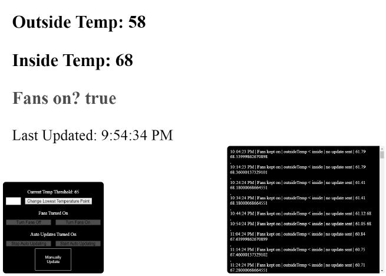

Raspberry Pi Fans
Using a Raspberry Pi Zero I developed a program that automatically turns on and off fans around my house depending on the temperature outside. To accomplish this I used a temperature sensor hooked up to GPIO pins on the Raspberry Pi to gather the inside temperature data and pulled the outside temperature from openweathermap.org.
I then used Node.js to locally host a server on the Raspberry Pi that compares, updates, and logs the values; turning on or off the fans accordingly. This also allows a client to make modifications to the program while running. The Node.js modules I used include Socket.io, Nodemailer, Axios, and a module for the sensor.
Socials: